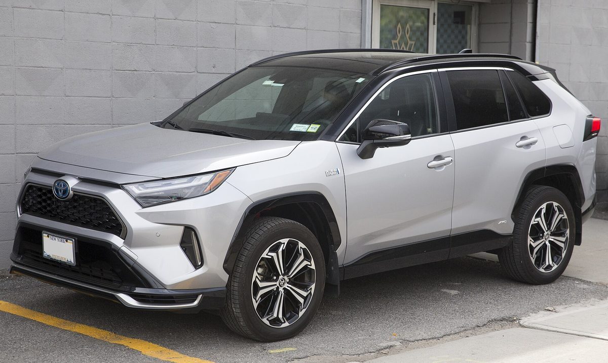
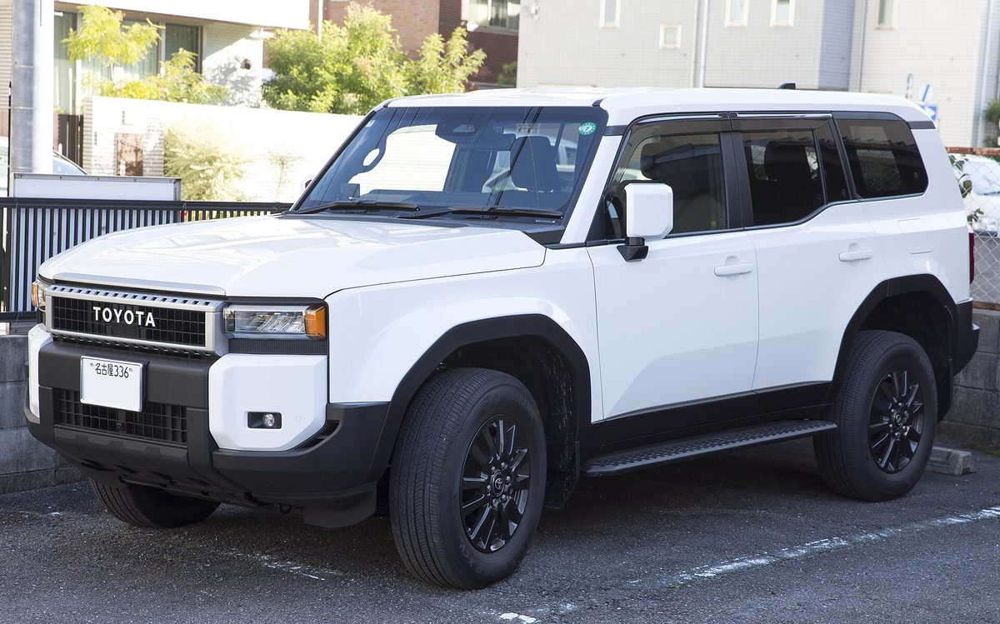
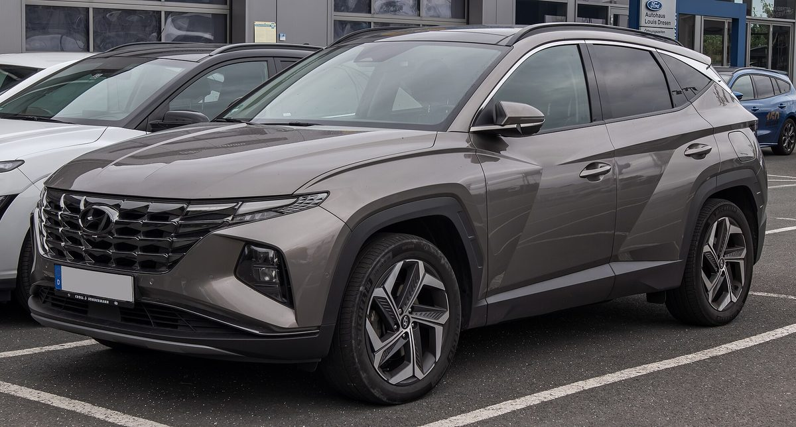
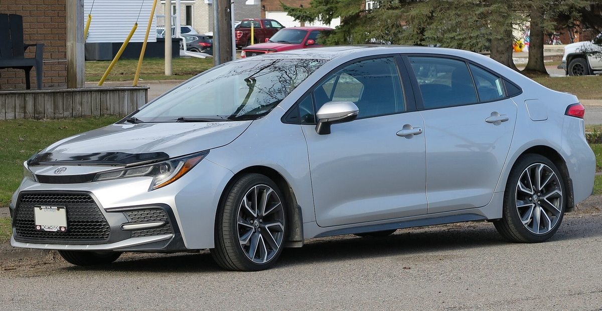
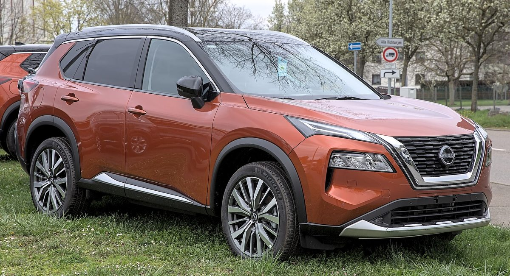
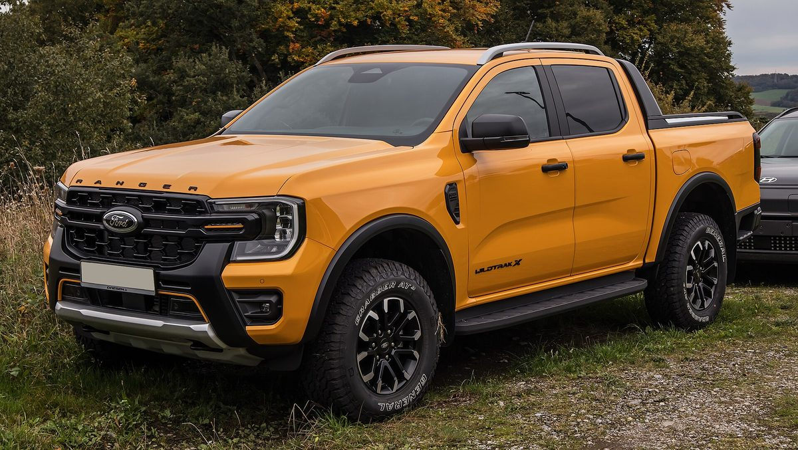

Photo credits
The vehicle photos on this site come from Wikimedia Commons and are used under the Creative Commons licences shown. Thank you to the photographers.

Photo: 2024_Toyota_RAV4_Prime_XSE_Premium_in_Silver_Sky_with_Midnight_Black_roof,_front_left.jpg

by Mr.choppers, CC BY-SA 4.0. Resized for the web.

Photo: 2024_Toyota_Land_Cruiser_250_VX_in_Platinum_White_Pearl_Mica,_front_left.jpg

by Mr.choppers, CC BY-SA 4.0. Resized for the web.

Photo: Hyundai_Tucson_1.6_T-GDI_PHEV_Prime_(IV)_–_f_05072025.jpg
_%E2%80%93_f_05072025.jpg){kind=link}
by © M 93, CC BY-SA 3.0 de. Resized for the web.

Photo: 2020_Toyota_Corolla_SE_Upgrade_Package_Sedan_in_Classic_Silver_Metallic,_front_left,_2025-04-20.jpg

by Elise240SX, CC BY-SA 4.0. Resized for the web.

Photo: Nissan_X-Trail_(T33)_1X7A7179.jpg
_1X7A7179.jpg){kind=link}
by Alexander-93, CC BY-SA 4.0. Resized for the web.

Photo: Ford_Ranger_2.0_EcoBlue_4WD_Wildtrak_X_(IV)_–_f_12102024.jpg
_%E2%80%93_f_12102024.jpg){kind=link}
by © M 93, CC BY-SA 3.0 de. Resized for the web.
Photo: 2020_Toyota_HiAce_(front).jpg
.jpg){kind=link}
by User3204, CC BY 4.0. Resized for the web.
Photo: 2017_Toyota_Yaris_L_5-door,_front_right,_08-25-2024.jpg

by MercurySable99, CC BY-SA 4.0. Resized for the web.